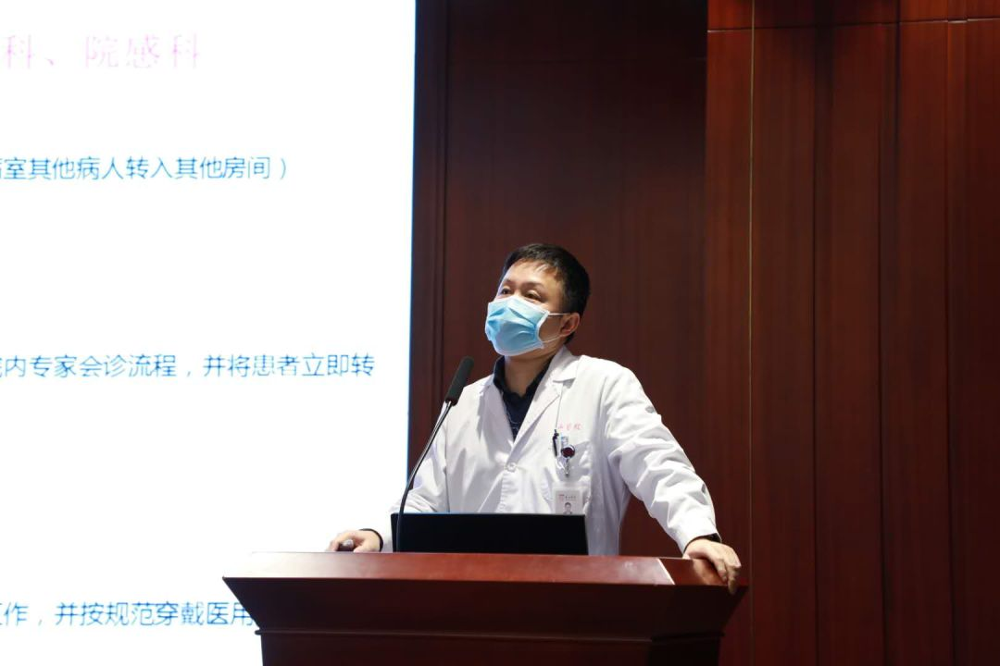

“新冠”病愈后：有人整理遗物，有人重拾夙愿
原文链接 备份链接 “我要承担自己的责任，好好照顾家人，把这个家像捏面粉一样捏起来。” 全文5358字，阅读约需10.5分钟 2月13日，余华离开医院、回到家中，多日未相见的女儿想念妈妈，张开双手要一个抱抱，余华硬下心肠拒绝了——这个拥 …
有时候半夜突然想到某个可能的漏洞，惊出一身冷汗。
记者 | 黄 祺
抗击新冠肺炎疫情的紧要关头，医院不能失守。
中国疾控中心2月17日的一份研究报告显示，全国已有3019名医务人员感染了新型冠状病毒，其中包括1716名确诊病例，导致5人死亡。感染的医务人员中80%以上在湖北省，疫情早期湖北不少医护人员因接诊患者而感染。
截止发稿，公开报道感染新冠病毒死亡的医护人员，已经有8人。
这个数据，让湖北以外的其他地区也倍感焦急——院内感染，是传染病防控中的大忌。
迄今，北京和天津都已经发生了院内感染事件。北京大学人民医院内，一位长期住院的老年病人和子女共三人被确诊。目前北大人民医院内，老年科病区患者及医护等人员共22人进行集中医学观察；病人可能接触的肾透析患者142人进行集中医学观察。
熟悉17年前非典历史的人，对北京大学人民医院一定印象深刻，北大人民医院因9个病房感染SARS，最后于2003 年4月23日启动全院隔离。北大人民医院共隔离1554人，包括工作人员942人、病人293人、陪住205人、家属宿舍楼109人，其他人员（没能在指定23日24时之前撤离的几个“号贩子”）5人。
湖北省内的疫情防控仍处于最艰巨的时刻，而全国其他地区，防控形势远远没有到可以松懈的时候。医院内的感染防控，是疫情防控的重中之重。

杨帆教授
《新民周刊》记者2月20日专访了复旦大学附属华山医院医院感染管理科主任、抗生素研究所教授杨帆。华山医院感染病学科在全国专科排名中名列前茅，由于常年接诊来自全国各地的疑难感染性疾病，华山医院对医院感染管理的要求也特别高。
从武汉出现传染病的消息传出开始，医院感染管理科就投入到应对传染病紧急事件的战斗中。说起一个多月的体会，杨帆主任说：有时候半夜醒来会突然想到某个可能存在的疏漏，惊出一身冷汗。尽管医务处、院感科会同各部门根据疫情变化不断细化管理制度和防控流程，医院几乎将全力投入防疫，但医院领导和各职能部门丝毫不敢松懈。
“抓特务”，找到每一个患者
《新民周刊》：现在每个人出门都戴着口罩，医院里发热门诊医护人员也按照最高标准防护。我们回想2003年SARS期间，防护级别没有现在这么高。为什么我们采取如此严格的措施？
杨帆：目前的新冠肺炎防控，主要策略是限制外出、减少聚集和加强防护。后者包括所有人外出戴口罩和医务人员按照不同暴露风险进行防控。
疫情发展到今天，新冠病毒传染性超出了所有人的预测。公平讲，这个疾病出现至今也不过3个月，我们的认识有个过程。在早期，许多专业人士对形势的判断也比现在乐观。湖北疫情恶化，除了当地应对失误，也由于初期对疾病传染性认识不足有关，隔离不及时和医务人员防护不足，造成新冠肺炎不仅在社区广泛传播，还发生大量患者和医务人员院内感染。所以基于惨痛教训，各级政府部门和医院均要求严防院内感染，一定要做好防护。同时，我们现在的物资条件远胜于当年，有条件以更高标准保证医务人员安全。

《新民周刊》：像上海这样的城市，准确地找到病人是重要的第一步，这一步怎么能做到既安全又准确？
杨帆：有一个很形象的比喻，在湖北的医护人员是“打鬼子”，主要治疗确诊病人。我们留守上海的医务人员是在“抓特务”，要在新冠肺炎流行病学特点越来越模糊的情况下找到患者，甚至无症状感染者。
疫情早期，基本上患者都是从湖北这样重点地区来的输入性病例，这个时候只要做好流行病学的调查，基本上是比较好寻找目标的。但是如今疫情发展到出现了二代三代甚至四代的病人，一些患者与重点地区已经没有什么关系，流行病学界限越来越模糊，人人都有嫌疑，要甄别出患者挑战巨大。
所以，我们对所有门诊、急诊患者进行测体温和流行病学筛查，并设置专门的发热预检，可疑患者均进入发热门诊，按严格流程进行鉴别诊断。为防止个别人隐瞒流行病学史，我们还需要通过手机验证患者近15天的行踪。
对发热门诊高度怀疑新冠肺炎的患者，会安排到观察病区进行诊治，并启动基因检测。为避免交叉感染，患者必须单间隔离。我们把一个感染科病房腾空，原本可以收治30多人的病房，现在按照隔离要求只能收10人。所有医护人员到留观病房都是二级防护，就是帽子、口罩、护目镜、防护服全身披挂，谁也认不出谁那种，以保证医务人员安全。
另外，我们还需要对住院患者、患者家属、保姆和护工进行密切监护，因为任何一个人感染，他与周围患者、各部门医务人员接触，他的各类标本送检，可能威胁一个病区、一栋住院楼甚至全院。所以院感防控是医院防疫工作的重中之重。
《新民周刊》：目前新冠肺炎的核酸检测阳性率不高，湖北的诊断标准改为可以根据临床症状结合流行病史来确诊。其他城市存在这方面的困扰吗？
杨帆：武汉是在核酸检测速度赶不上需要时增加了“临床诊断”分类，为尽快把疑似的病人隔离、避免感染传播而采取得权宜之计，近日在检测能力提升后已取消“临床诊断”分类。
湖北以外的地方不采用这个标准。新冠肺炎的诊断，还是要有病原学证据，就是要做核酸检测。阳性率取决于采样质量和实验室水平，必要时可以重复采样检测。
守住医院安全，保护医疗“战斗力”
《新民周刊》：为什么说医院的感染管理非常重要？
杨帆：全国各地支援湖北的医护人员已经达到3万多人，那里是主战场，战斗非常艰苦，也非常危险。
全国其他地方的医院，病人数量没有湖北那么多，但同样是高风险的，更加要重视院内感染，防止疫情的扩大。
北大人民医院这起事件之前，天津已经发生过院内感染的事件。
2月初，一名发热病人到武清区人民医院发热门诊就诊，接诊医生多次询问流行病学史无异常，根据症状综合判定为普通发热患者，在呼吸内科住院治疗，后来这名患者被确诊为新冠肺炎。武清人民医院2月4日清晨封控，管控隔离了973人，其中739人转到集中隔离点进行观察隔离，234名患者则实行住院隔离治疗。
防止疾病在医院的传播包含两个方面的内容，一个是防止新冠患者传染其他病人，还一个是防止医护人员感染。医院本来就是人员聚集场所，很多患者是存在免疫缺陷的人，他们容易受到病毒的感染。医护人员也不能被传染，医护人员被传染损失更大。
现在全国医护人员增援武汉，为什么武汉缺那么多医生，一个原因是患者多，另一个原因是之前不仅大量医生被感染，还有一些因密切接触感染者被隔离，严重削弱当地医疗能力。医生感染不仅威胁患者，同时，还威胁家人。而且我们很多医务人员还是夫妻，比如我爱人是中山医院的医生，如果我被传染，还可能威胁中山医院。所以说，一个感控疏漏，牵涉面极大，后果可能很严重。

华山医院不断更新和完善院内感染管理措施
《新民周刊》：华山医院为疫情做了哪些院感管理方面的准备？
杨帆：春节前几天，我们意识到疫情不仅仅是武汉的事情，已经威胁到全国了。华山医院开始着手各方面的准备。比如发热患者就诊的这个流程，就不能再像平常一样。平常看病大家都知道，一个病人先去预检台，他要去诊室，要去做检验，还有可能上电梯，要去缴费、拿药。如果出现传染病，患者这一圈走下来，预检台的护士、收费人员、门诊医生、检验人员、同乘电梯的人，都有被感染的危险。
所以说我们对就诊流程做了专门的设计，如前所述，为对每位就诊者进行甄别，医护人员都提高了防护级别。对自己的员工的健康也进行严密观察，员工进医院都要测体温；外地返沪也要居家隔离14天方能上班。我们还在修改访客制度，工作伙伴、领导、记者，比如您如果要来医院现场采访我，也必须登记和测体温。
很多同事问我，以后这些措施会不会变？我很难回答这个问题，疫情一直在发展变化，我们现在制定院感管理措施是用“周”计的。我们时刻根据情况的变化制定措施，适应新的情况。
《新民周刊》：这段时间感觉压力最大的是什么？
杨帆：作为高年资医生，工作平时也不轻松，查房、门诊、会诊、讲课，包括许多出差……所以单从“忙”来说，未必更忙。但是现在最主要压力大，唯恐一个疏失，危及患者、同事安全，甚至影响全院、上海。
2003年非典疫情也严峻，但相比而言这一次挑战更大。非典疫情中上海病例很少，这一次患者数量多几十倍，而且疾病更为隐蔽，人员流动更大、更迅速，威胁相应大了许多。
华山医院在这次超乎寻常的传染病疫情中，医院上下迅速从常规医疗调试到防疫状态，这当中包括硬件设施的改造，员工迅速转变角色，各部门迅速磨合，将人力和防护资源集中在防疫，不断完善各种流程，尽最大努力减少新冠病毒传播风险。
外界看似风轻云淡，但实际我们的工作不仅繁忙，还常有惊心动魄。
《新民周刊》：现在不少医院暂停了非紧急的手术或者治疗，为什么需要采取这样的措施？
杨帆：目前的院感管理措施是为新冠肺炎疫情巨大挑战作的安排，为了减少患者交叉感染机会，，全国的医院都压缩了日常医疗活动，肯定会给一些患者带来不便，但可以为疫情防控集中资源、人力和争取时间，是以局部、短期的牺牲，换取全局和长远的利益。
刚开始，一些同仁也不能理解这种医疗安排，觉得不能将病人拒之门外。医务处和我们院感科为此跟很多临床科室主任做了艰苦沟通解释。我跟一些医生开玩笑说，平常我们只有辛勤工作才能得到表扬，这次越少干活越能得表扬，大家要珍惜这种千载难逢的机会。最终让同仁真正理解这种策略来自湖北乃至其他省市的惨痛教训。
当然，目前的非常措施的确对一些病人看病带来了不便，医院也根据疫情作相应调整，满足急需的就医需求。卫生行政部门要求日常医疗活动的恢复要有序、稳妥、逐步，我觉得就好像一个人拉过肚子以后，不能因为前面有营养损失就暴饮暴食来弥补，明智的做法是由少到多慢慢来。
令人高兴的是，从近几天数据上我们已经看到一些好消息，不仅湖北，其他省市的发病人数都有所下降，上海更是发病人数到了个位数甚至零。说明全社会尤其医院的努力卓有成效。
这场“抓特务”的战斗，不像武汉抗疫战场那样轰轰烈烈，但巩固和保卫了上海安全，也使得我们有充分力量去支援湖北。
《新民周刊》：上海有 111家发热门诊，院感管理是不是都很严格？
杨帆：卫生行政部门一开始就极为重视发热门诊的院感防控，通过各类检查和督导保证安全。刚开始个别医院尚准备不足，比如有些医院防护等级没有达到要求，甚至发热门诊医生还穿重复使用的手术衣作为防护。卫生行政部门的努力和疫情发展，使得各医院迅速以最大努力防控医院感染风险。
疫情留给我们哪些拷问
《新民周刊》：公众非常关心，疫情接下去到底会怎么发展？
杨帆：最近很多专家也表达了他们的观点。从病毒自身的进化规律来说，如果它搞“你死我活”，把宿主干掉了，它自己也生存不了。反而是像乙肝病毒这种跟人类长期共存的病毒，可以蔓延很多年。所以新冠病毒在传播中可能毒力下降，而且人群中感染的人多，可能会产生抗体，减少它的传播。另外随着气温的升高，可能会对疫情控制带来好处。
但这个疾病才发现3个月不到，我们的认识还很不充分，它何时控制，今后会不会卷土重来，甚至像流感一样年年有？这些问题目前都很难回答。
《新民周刊》：您经历了非典，又在新冠肺炎防疫的一线工作，您认为我们应该从疫情中反思哪些问题？
杨帆：从这次疫情的发生我们可以看到，我们国家的公共卫生体系还不够完善。比如疾控系统的反应，疾控系统对自身定位，与临床的合作，都还有改进之处。另外，医院对感染科、院感科应该更加重视，在建筑布局等硬件安排上要更多考虑应对这种传染病的挑战。

征集令
《新民周刊》现面向全国征集新冠肺炎采访对象和真实故事：
如果你是参与抗击新冠肺炎疫情的医护人员或其家属，我们希望聆听你的“战疫”故事，也希望传达你的诉求。
如果你是确诊、疑似患者本人或家属，我们希望了解你和家人如何“抗疫”的过程，让外界了解你的真实经历。
如果你是疫情严重地区的普通市民，我们希望展现你的乐观，并倾听你所需的帮助。
如果你是公共服务人员或各类捐助者，我们希望看到你的“最美逆行”，记录下你的无私。
……
抗击新冠肺炎疫情，我们诚征对疫情了解的社会各界人士，提供相关线索，说出你的故事，让我们用新闻留存这一切。
《新民周刊》新冠肺炎线索征集值班编辑联系方式（添加时请简要自我介绍）：
周一：应 琛 微信号：paulineying0127
周二：金 姬 微信号：gepetta
周三：黄 祺 微信号：shewen-2020
周四：周 洁 微信号：asyouasyou
周五：孔冰欣 微信号：kbx875055141
周六：吴 雪 微信号：shyshine1105
周日：姜浩峰 微信号：jianggeladandong
✳如你需要捐赠物资，可与以下两位工作人员联系:王勇：WangYong-SH 吴轶君：rommy150708（添加时请注明“捐物资”，方便工作人员快速通过您的申请，谢谢。）
新闻是历史的底稿，你们是历史的见证者。期待你的故事、你的线索！

▼
大家还都在看这些
▼
新民周刊所有平台稿件， 未经正式授权
一律不得转载、出版、改编
或进行与新民周刊版权相关的其他行为，违者必究


原文链接 备份链接 “我要承担自己的责任，好好照顾家人，把这个家像捏面粉一样捏起来。” 全文5358字，阅读约需10.5分钟 2月13日，余华离开医院、回到家中，多日未相见的女儿想念妈妈，张开双手要一个抱抱，余华硬下心肠拒绝了——这个拥 …
原文链接 备份链接 【财新网】（记者 赵宁）北京大学人民医院（下称北大人民医院）有住院病人确诊为新冠肺炎的消息获得证实。与该医院相关确诊病例一共三人，分别为田某某、李某某、张某某，其中一人先由发热门诊排查，后又追溯发现了涉及医院老年科和肾 …
原文链接 备份链接 疫情危机再一次提醒我们，在公共卫生方面，从政府、社会到公众，我们还有很多功课未能完成。 作者 | 朱纪明 程峰（清华大学医学院公共健康研究中心） 编辑 | 徐菁菁 药物和疫苗不一定“特效” 身在疫情中，大众的期待是特效 …
原文链接 备份链接 研究者正试图揭示新冠病毒的致病性、致死性机制，为临床治疗提供新依据，阶段结果是新冠病毒的致病特征与SARS相似，而进一步的结果或将由解剖揭开 2020年2月初，武汉金银潭医院隔离病区内，医护人员正在给新冠肺炎患者做治 …
原文链接 备份链接 疫情严峻，武汉仍在不断征集新冠肺炎床位。重压之下，各家医院肿瘤科「只出难进」，有患者被迫出院，通过网络发帖求助；也有患者试图寻求省外求医路，却被两边「入院接收单」与「通行证」夹在中间，难寻答案。 —— 同一个家庭里的新 …